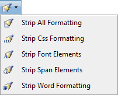

The Color and CSS toolbar of the TelerikEditorProvider RTE has the following tools:
| Tool | Icon | Description |
|---|---|---|
| Foreground Color |
Option One: Click the Arrow icon associated with the Foreground Color button open the color picker and then select the required foreground color for the selected content. Option Two: Click the Foreground Color icon to apply the used last color to the content. |
|
| Background Color |
Option One: Click the Arrow icon associated with the Background Color button to open the color picker and then select the required background color for the selected content. Option Two: Click the Background Color icon to apply the used last color to the selected content. |
|
| Apply CSS Class | Select the CSS Class to be applied to the selected content. | |
| Format Stripper |

|